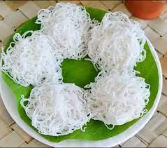

Puttu is a breakfast dish eaten in the South Indian states of Kerala, Tamil Nadu and parts of Karnataka, as well as Sri Lanka. Puttu means "portioned" in Tamil and Malayalam. It is made of steamed cylinders of ground rice layered with coconut shavings, sometimes with a sweet or savory filling on the inside. Wikipedia
Idiyappam

Idiyappam is a culinary speciality throughout the Indian states of Tamil Nadu, Kerala, and Karnataka and in Sri Lanka. The name idiyappam derives from the Tamil. The Tamil word idi (meaning beat) and appam, The dish is also, called noolappam or noolputtu, originating from the T meaning string or thread.
Ilayada
Ada (Malayalam: അട) or Ela Ada,[1] is an Indian sweet and traditional Kerala delicacy, consisting of rice parcels encased in a dough made of rice flour, with sweet fillings, steamed in banana leaf and served as an evening snack or as part of breakfast. It can be seen even in parts of Tamil Nadu as well. rice flour, sugar or jaggery and grated coconut.
Appam
Appam (also known as “palappam”) are tasty, lacy and fluffy pancakes or hoppers from the Kerala cuisine that are made from ground, fermented rice and coconut batter. Thin and crispy around the edges with soft fluffy center appam taste delicious when paired with vegetable stew for a hearty vegetarian breakfast.
Meen Pollichathu
Kerala Meen Pollichathu / Fried Fish in Banana Leaf Wrap is traditionally known as Karimeen Pollichathu as this recipe is traditionally made with Karimeen (Pearl spot fish). Here I’m gonna make it with Pomfret fish (though you can make it with any kind of fish). Kerala Meen Pollichathu / Fried Fish in Banana Leaf Wrap is wrapped in a banana leaf and cooked with spicy masala sauce.
Chemmin Dry Fry
We have tried variety of seafood dishes before. Seafoods are highly rich in minerals. They also contain high levels of Zinc, which is important to develop a healthy immune system.This is an other prawn recipe tried in my own kitchen. It is a simple and easy way to serve your prawn for you children. This Kerala Style Prawns Dry Fry/ Chemmeen Fry my child’s favourite dish for her lunch